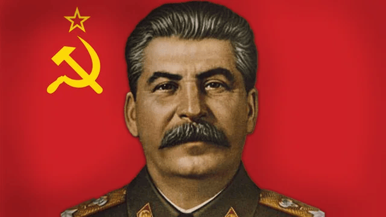

Le 30 décembre 1922, la République soviétique devient l’URSS : union des républiques socialistes soviétiques, suivant la guerre civile de 1921. À cause de cette guerre civile, le pays est frappé par d’intenses famines. La même année, la santé de Lénine (chef du pays à cette époque) se dégrade grandement et provoque une lutte pour le pouvoir qui aboutira, contre la volonté de Lénine, à la prise de pouvoir de Joseph Staline. Staline débute comme secrétaire général du Parti le 3 avril 1922 et tente d’éliminer son principal opposant politique : Léon Trotski. Staline décide d’arrêter la NEP, une mesure mise en place par Lénine pour ralentir l’industrialisation du pays en laissant plus de libertés aux agriculteurs ; cette mesure avait mis fin aux famines qui rongeaient l’urss mais Staline l’annula pour reprendre l’industrialisation forcée de l’URSS. En 1927 Staline devient chef de l’URSS et, le 21 août 1940, il parvient à faire assassiner Trotski, exilé. Staline mit en place une dictature totalitaire qui contrôlait tous les moyens de production et les courants de pensée via la police d’État (NKVD). De plus, Staline organisait régulièrement de grandes purges de la population et des cadres de tout corps de métier, même au sein de l’armée ou de l’administration. Il mit en place un culte de la personnalité. Pendant la guerre froide, Staline construit un véritable rideau de fer (frontière entre les pays soutenus par les États-Unis et ceux soutenus par l’URSS) via son contrôle totalitaire, notamment. Staline meurt en mars 1953.